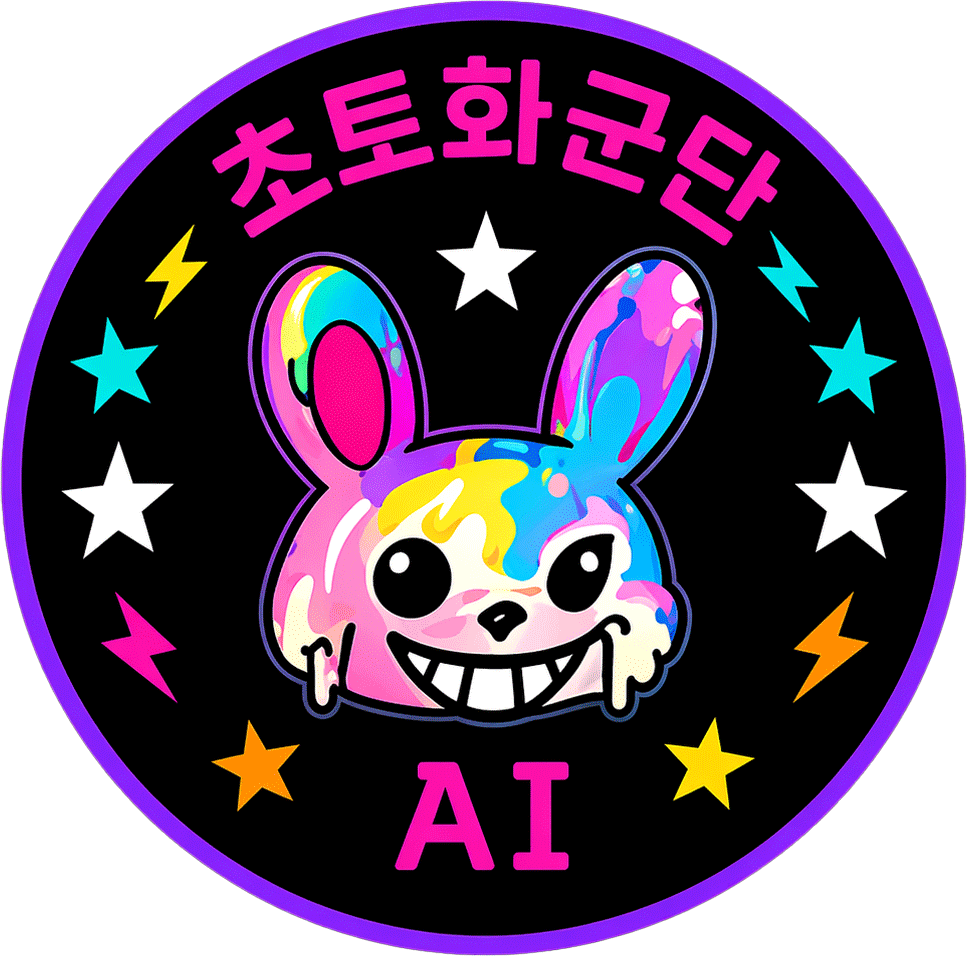

초토화군단의 미친 꿈을 위대하게 !!!
첫 번째 꿈이,
조용히 현실이 되고 있습니다.
2026년 12월경 정식 오픈 예정
프로젝트가 궁금하신가요?
궁금하신 점은 이메일로 편하게 남겨주세요.
이메일로 문의하기초토화의 시작과 생각
© 2026 CHOTOHWA

2026년 12월경 정식 오픈 예정
궁금하신 점은 이메일로 편하게 남겨주세요.
이메일로 문의하기초토화의 시작과 생각
© 2026 CHOTOHWA
초토화군단은 거창한 구호보다는 묵묵한 실행을 믿습니다. 우리는 '파괴적 혁신(Disruptive Innovation)'의 가치를 마음 깊이 새기고 비즈니스에 임하고 있습니다. 업계를 선도하는 훌륭한 기업들이 미처 챙기지 못하는 작은 빈틈과 불편함 속에서 우리는 새로운 기회를 발견합니다. 창업자의 밑바탕에 흐르는 '롹켄롤(Rock 'n' Roll) 정신'은 오만함이나 단순한 파괴가 아닌, 낡은 관행에 안주하지 않고 끊임없이 더 나은 해답을 찾고자 하는 순수한 열정이자 도전 정신입니다. 우리는 이 열정을 동력 삼아, 화려함보다는 본질에 집중하며 시장의 가장 낮은 곳에서부터 조용히, 하지만 확실하게 변화를 만들어가려 합니다.
우리의 도전은 한 개인의 열정에만 머물지 않고, 시대의 흐름인 '첨단 AI 기술'과 '장명환의 제너럴리스트(Generalist) 역량'을 통해 구체화됩니다. 각 분야의 뛰어난 전문가들을 깊이 존중하는 동시에, 우리는 기획, 개발, 디자인, 비즈니스 등 다양한 영역을 경계 없이 연결하며 전체적인 맥락을 짚어내는 데 집중합니다. 인간의 물리적 한계는 AI의 압도적인 속도와 분석력을 겸허히 빌려 채워나갑니다. 이를 통해 우리는 거대한 자본이나 큰 조직 없이도, 고객이 진정으로 필요로 하는 문제들을 생각보다 훨씬 빠르고 정교하게 해결해 나가는 작지만 단단한 팀이 되었습니다.
우리의 시선은 높은 곳의 화려한 무대가 아닌, 누군가는 작다고 지나칠 수 있는 밑바닥과 틈새를 향해 있습니다. 거창한 장벽을 단숨에 무너뜨리겠다는 오만함보다는, 우리의 진정성 있는 고민과 롹켄롤의 식지 않는 에너지로 굳어진 관행들을 조금씩 유연하게 풀어가려 합니다. 제너럴리스트의 넓은 시야와 AI의 효율성을 바탕으로, 고객의 일상에 작지만 확실한 혁신을 전해드리고 싶습니다. 요란하지 않지만 결코 멈추지 않는 걸음으로 세상에 꼭 필요한 새로운 질서를 제안하는 것, 그것이 초토화군단이 만들어가고자 하는 결연한 무브먼트입니다.
- 초토화군단 파운더, 장명환